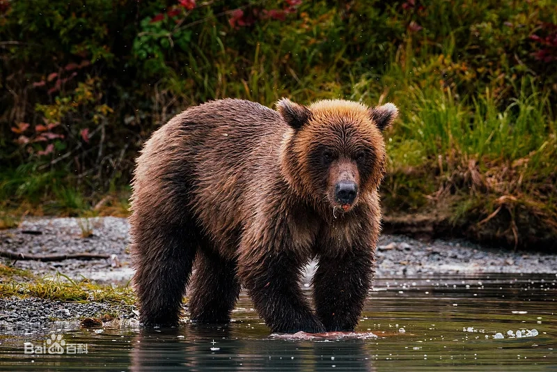
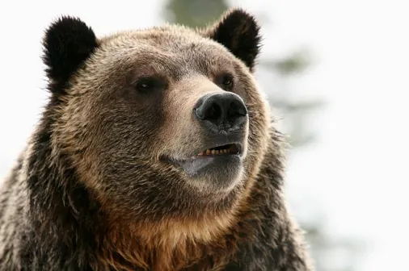

棕熊
棕熊是陆地上体形最大的哺乳动物(食肉目) 。棕熊通常都比较胆小，嗅觉极佳，是猎犬的7倍，他们的视力也很好，在捕鱼时能够看清水中的鱼类。别看人家外表笨重，它们奔跑的速度可达到每小时60公里，由于耐力甚好，它们可以用这样的速度连续奔跑个几英里都没问题。一般来说，植物性食物占了60-90％，棕熊也是奉行独身至上的动物。它们都有各自的领地，且通常颇为广阔。棕熊的窝通常建在隐蔽得比较好的山坡上，或是大石头底下，要么是大树的树根间。为了让母熊们尽早进入交配阶段，公熊们会找机会杀死这些母熊的孩子。在野外讨生活的棕熊们寿命大约有20-30年，当然很多棕熊在它们生命的最初几年就宣告结束。在圈养条件下，寿命最长的棕熊活到了50岁。我国目前将境内棕熊列为国家二级保护动物。

百科
棕熊分布广泛，主要分布在欧亚大陆和北美，在中国主要分布在新疆、青藏高原和东北山林地区。适应力比较强，从荒漠边缘至高山森林，甚至冰原地带都能顽强生活。杂食性动物，主要食用草料、谷物及各种果实等植物性食物，偶尔摄食昆虫、有蹄类动物、鱼和腐肉等动物性食物。繁殖季节为每年的5—7月，母熊怀孕约6—9个月后，在冬眠洞中产仔,每胎1—3只幼熊。

知识拓展
熊类的最早的祖先都是犬科动物，进化成熊后，由于食物上更多地依赖于水果，容易面临冬季里食物缺乏的问题，为了生存，冬眠无疑是最好的办法。唯一一种可以在半年甚至更长的时间里不吃、不喝、不排尿、不排粪的哺乳动物，冬季里维持必要体内活动的能量来自于体内存储的脂肪。属中国国家二级保护野生动物，同时被《世界自然保护联盟濒危物种红色名录》（IUCN）列为无危（LC）。